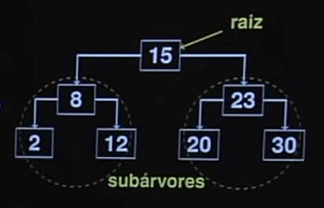
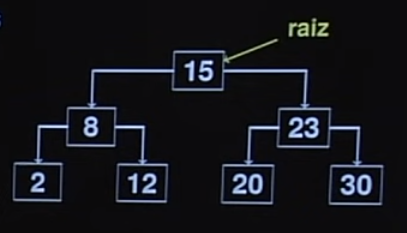
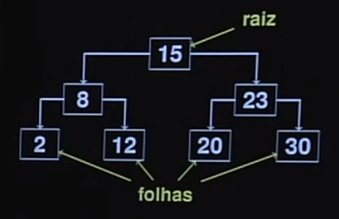
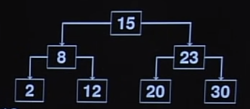
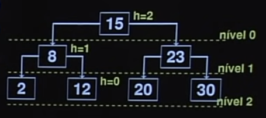
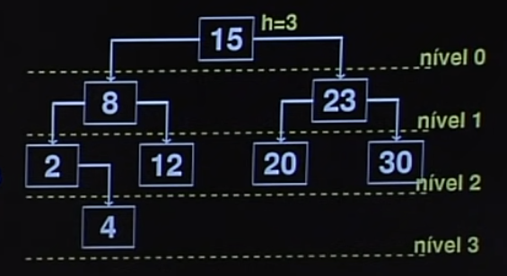
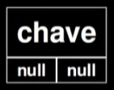

Disciplinas
-
ESTRUTURA DE DADOS-T01-2024-1 Concluído
Materiais
Vídeo 2 - Estrutura de Dados - Aula 15 - Árvores - Conceitos básicos. sendProf° ministrante: Norton T. Roman.
Conteúdo
Árvores - Conceitos básicos.
Buscando um Elemento.
- Imagine que queremos buscar um elemento (15) no arranjo abaixo. Como fazer?
- E o 16?
- Será que não poderíamos aproveitar o fato de que o arranjo está ordenado? Ex: buscando o 16.

- Busca binária é mais eficiente...
- Mas depende de arranjos estáticos.
- E se tivéssemos uma lista ligada? Ops!
Será que não podemos ter uma estrutura dinâmica que nos ajude nessa tarefa?
- Eis nossa estrutura. Que nome daremos a ela?
- Arvore
Uma observação: em computação costumamos representar a árvore de forma invertida...
Árvores.
Uma árvore é um conjunto de nós consistindo de um nó chamado raiz, abaixo do qual estão as subárvores que compõem essa árvore.
O número de subárvores de cada nó é chamado de grau desse nó. No exemplo ao lado, todo nó tem grau 2, exceto os da base, que têm grau 0.
Nós de grau zero são chamados de nós externos ou folhas. Os demais são chamados de nós internos.
Nós abaixo de um determinado nó são seus descendentes.
Descendentes do 8: 2 e 12.
Descendentes do 15: todos os demais.
O nível do nó raiz é 0
A altura (h) de um nó é o comprimento do caminho mais longo entre ele e uma folha.
Vale notar que a árvore é percorrida da raiz às folhas.
Nem sempre a árvore estará perfeitamente balanceada. Ainda assim, as definições de altura, nível etc valem.
A altura de uma árvore é a altura do nó raiz.
Da mesma forma, o endereço de uma árvore na memória será o endereço de seu nó raiz.
A profundidade de um nó é a distância percorrida da raiz a esse nó.
- Profundidade de 15:0
- Profundidade de 8: 1
- Profundidade de 12: 2
Árvore Binária.
Uma árvore binária é uma árvore em que, abaixo de cada nó, existem no máximo duas subárvores.
Como representamos computacionalmente uma árvore binária?.. Unindo nís.
Com 2 ponteiros: um para a subárvore da esquerda e um para a subárvore da direita.
Além de um campo para a chave e dados.
 Linguagem C.
#include (stdio.h>
#include (stdlib.h> typedef NO* PONT;
#define true 1
#define false 0
typedef int bool;
typedef int TIPOCHAVE;
typedef struct aux {
TIPOCHAVE chave;
/* Dados armazenados vão aqui */
struct aux *esq, *dir;
} NO;